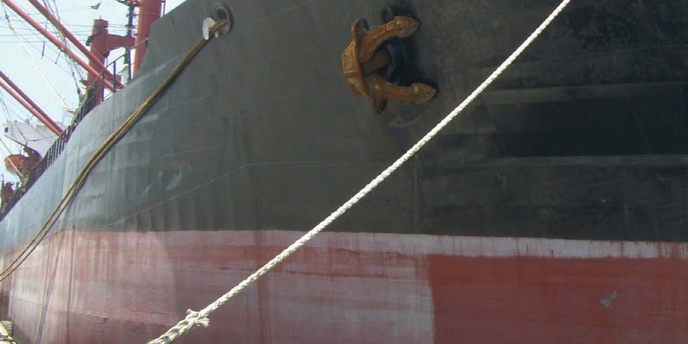

Línea Marine·Amarre
C12
12 cordones Composite
C1212 cordones CompositeFoto del producto
Características
El C12 combina poliéster y polipropileno en cada hilo de sus cordones: es de 15% a 25% más liviano que los cabos de poliéster y de 35% a 40% más resistente que los de polipropileno. La construcción de 12 cordones mantiene el torque balanceado y resiste bien la abrasión de cantos y superficies afiladas.
Aplicaciones en la línea Marine
- Amarre
- Poliéster y polipropileno en cada hilo
- 12 cordones, torque balanceado
- Alta flexibilidad para el manejo
- Excelente resistencia al sol
- Alta resistencia a la rotura
- Alargamiento medio
- Flotabilidad negativa
Ficha técnica
C12 · 12 cordones Composite
Identificación
- Código
- 12COMP
- Construcción
- Trenzado de 12 cordones
- Material
- Poliéster y polipropileno
- Color
- Natural (blanco)
- Norma
- ISO 10556
Dimensiones y propiedades
- Diámetros
- 18 a 144 mm
- Rotura mínima hasta
- 337 t
- Densidad
- 1,14 g/cm³
- Punto de fusión
- 207 °C
- Absorción de agua
- menor que 1%
- Flotabilidad
- Negativa
Desempeño y manejo
- Resistencia UV
- Muy alta
- Resistencia a la abrasión
- Muy alta
- Alargamiento
- Regular
- Absorción de impactos
- Regular
- Empalme
- Sin dificultad
Datos del catálogo técnico de CSL. Valores de rotura por diámetro en la tabla de abajo.
Dimensionamiento
Masa y carga de rotura por diámetro
Elija un diámetro para ver masa y carga de rotura, con la sección del cabo dibujada a escala junto a una moneda de R$ 1.
Una mezcla de poliéster y polipropileno que brinda alta durabilidad en aplicaciones con mucha exposición al sol, así como una alta resistencia a la rotura.
Está fabricado totalmente en multifilamento, lo que garantiza buena flexibilidad y facilidad de manejo.
Su construcción de 12 cordones garantiza un torque balanceado y una buena respuesta a la abrasión de cantos y superficies afiladas.
Datos por diámetro
- Circ. (”)
- Masa nominal (kg/100 m)
- Masa nominal (kg/220 m)
- Carga mínima de rotura (t)
- Carga media de rotura (t)
Sección esquemática de la construcción, a escala con la moneda.
C12 · 12COMP
Tabla técnica
25 diámetros. Seleccione una fila para ver los valores en el cuadro superior.
| Diám. (mm) | Circ. (”) | Masa nominal (kg/100 m) | Masa nominal (kg/220 m) | Carga mínima de rotura (t) | Carga media de rotura (t) |
|---|---|---|---|---|---|
| 18 | 2 1/4 | 18 | 39 | 6,4 | 8,1 |
| 22 | 2 3/4 | 27 | 59 | 9,3 | 11,8 |
| 24 | 3 | 32 | 70 | 10,9 | 13,9 |
| 26 | 3 1/4 | 37 | 82 | 12,8 | 16,2 |
| 28 | 3 1/2 | 43 | 95 | 14,7 | 18,6 |
| 30 | 3 3/4 | 50 | 110 | 16,8 | 21 |
| 32 | 4 | 57 | 125 | 19 | 24 |
| 36 | 4 1/2 | 72 | 158 | 24 | 30 |
| 40 | 5 | 89 | 195 | 29 | 37 |
| 44 | 5 1/2 | 107 | 235 | 35 | 44 |
| 48 | 6 | 127 | 279 | 42 | 52 |
| 52 | 6 1/2 | 150 | 330 | 48 | 61 |
| 56 | 7 | 173 | 381 | 56 | 70 |
| 60 | 7 1/2 | 199 | 438 | 64 | 80 |
| 64 | 8 | 227 | 499 | 72 | 91 |
| 72 | 9 | 287 | 631 | 90 | 114 |
| 80 | 10 | 354 | 779 | 109 | 139 |
| 88 | 11 | 428 | 942 | 132 | 167 |
| 96 | 12 | 510 | 1.122 | 155 | 197 |
| 104 | 13 | 600 | 1.320 | 181 | 229 |
| 112 | 14 | 690 | 1.518 | 208 | 264 |
| 120 | 15 | 796 | 1.751 | 238 | 302 |
| 128 | 16 | 906 | 1.993 | 268 | 341 |
| 136 | 17 | 1.020 | 2.244 | 302 | 383 |
| 144 | 18 | 1.150 | 2.530 | 337 | 427 |
Línea Marine
Otros productos de la línea
- Victor · Doble trenzado híbrido48 a 264 mm
- Nylon2IN1 · Doble trenzado Nylon48 a 264 mm
- Circular Nylon64 a 264 mm
- Bravíssimo · Doble trenzado HMPE48 a 264 mm
- BRAVO12 · 12 cordones HMPE10 a 96 mm
- MFP8 · 8 cordones Polipropileno Multifilamento18 a 144 mm
- MFP12 · 12 cordones Polipropileno Multifilamento18 a 144 mm
- PA12 · 12 cordones Nylon18 a 144 mm
- PES12 · 12 cordones Poliéster18 a 144 mm
- PP12 · 12 cordones Polipropileno Monofilamento18 a 144 mm
- PB12 · 12 cordones Polyblend18 a 144 mm
- PES8 · 8 cordones Poliéster18 a 144 mm
- PA8 · 8 cordones Nylon18 a 144 mm
- C3 · 8 cordones Composite18 a 144 mm
- PP8 · 8 cordones Polipropileno Monofilamento18 a 144 mm
- PB8 · 8 cordones Polyblend18 a 144 mm
- Sierra80 a 292 mm
- PB3 · 3 cordones Polyblend4 a 48 mm
- PA3 · 3 cordones Poliamida (Nylon)3 a 48 mm
- PES3 · 3 cordones Poliéster3 a 48 mm
- PP3 · 3 cordones Polipropileno Monofilamento4 a 48 mm
- MFP3 · 3 cordones Polipropileno Multifilamento4 a 48 mm
- BRAVO8 · 8 cordones HMPE4 a 96 mm
- Circular HMPE48 a 264 mm
¿Necesita el C12 en su proyecto?
Nuestro equipo, de ventas a ingeniería, ayuda a especificar diámetro, longitud y terminaciones.